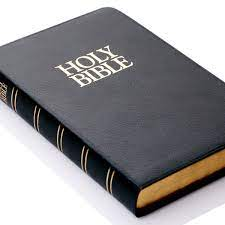

Bozije meso - recept
- Prvo je potrebno zivo mesto iseckati na sitne komadice dok se jos otapa
- Nakon ovog, zivo meso treba staviti u sok od lubenice
- Onda treba izvaditi bibliju
- Posle ovog je ostalo samo da zapalimo ovo sve zajedno, sve zajedno sa biblijom
- Sve staviti u pecnicu i cekati da se meso RODI